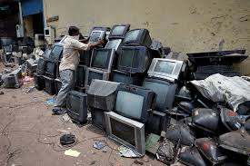

E-WASTE & E-WASTE MANAGEMNET

HOME POLICY IMPORTANCES GALLARY
E-waste management
refers to the processes and practices involved in
managing electronic waste (e-waste) in an environmentally responsible manner.
E-waste includes discarded electronic devices, such as:- Computers
- Smartphones
- Televisions
- Printers
- Batteries
- Cables
- Other electronic components